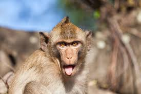

Macedon
Macedon monkey
Magenta
Description about mascot
Macedon is a town in Wayne County, New York, United States. The population was 9,148 at the 2010 census.The Town of Macedon is named after the birthplace of Alexander the Great, in Ancient Macedonia.[4] It is located in the southwest corner of Wayne County and contains a hamlet also named Macedon, formerly an incorporated village.
Three fun facts about mascot:
- The town of Macedon was incorporated during the canal construction in 1823, from what had been the western half of the Town of Palmyra.
- Monkeys sleep while sitting in trees, often upright!
- Monkeys eat plant-based foods, and also meat in the form of bird eggs, small insects, and lizards.

index link